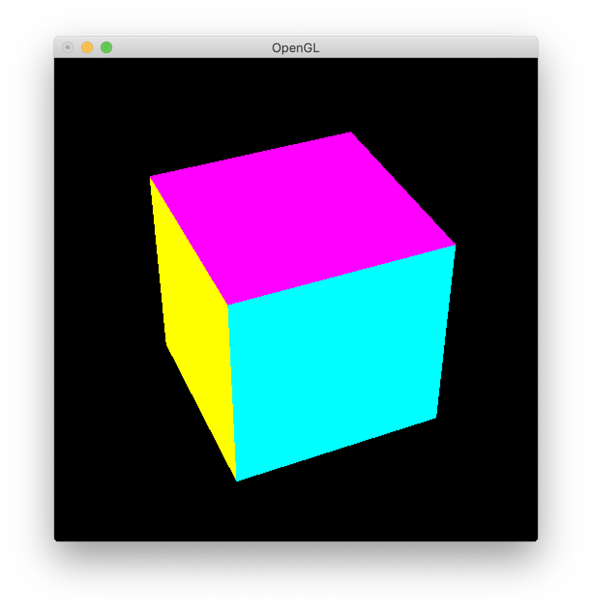
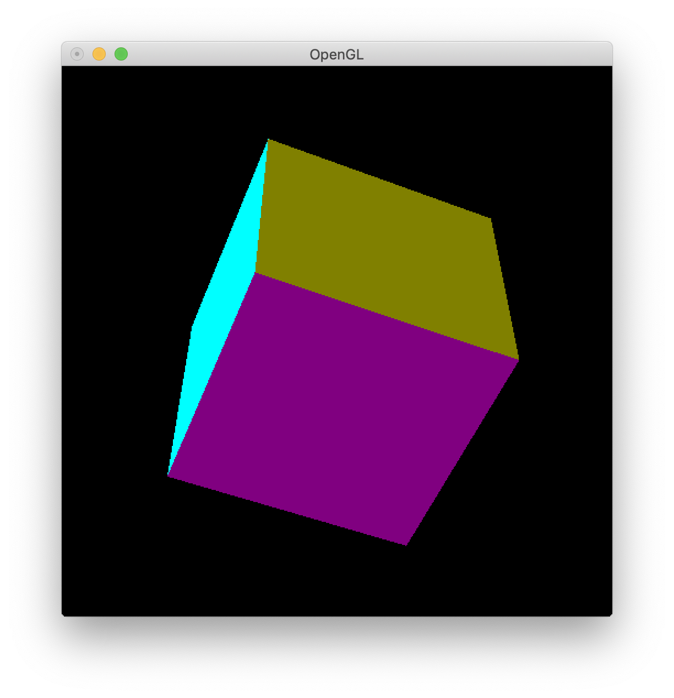
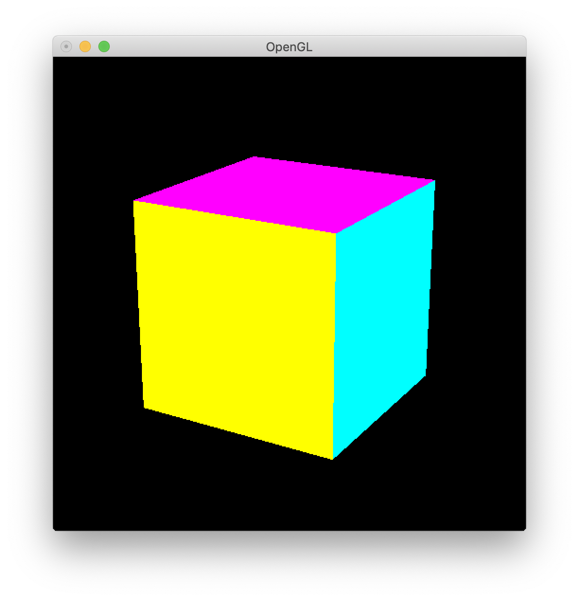
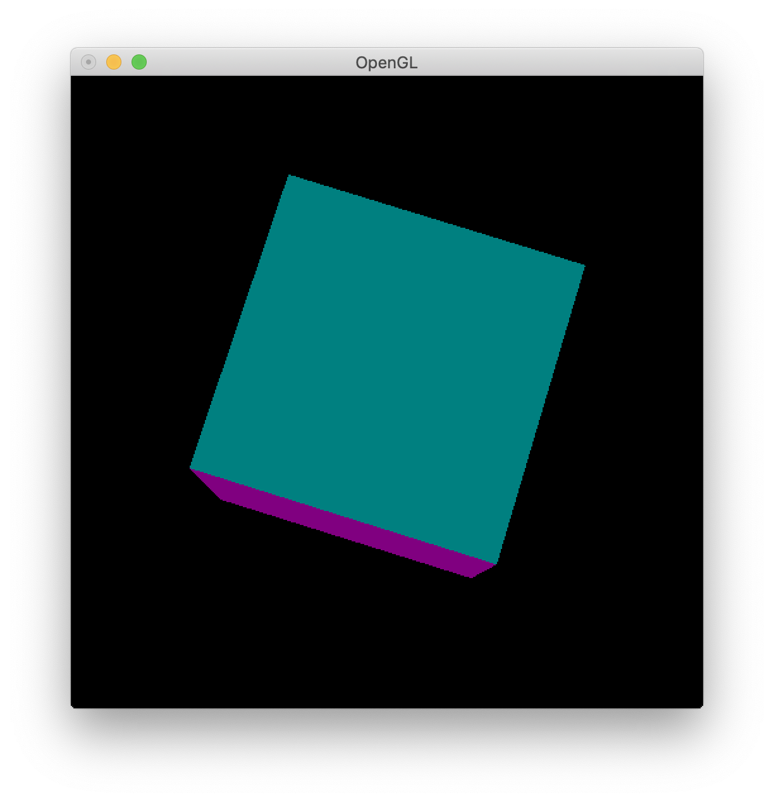

| 氏名 | 林橘平 |
|---|---|
| クラス | 総合情報学コース3年 |
| 学生証番号 | 08-192025 |
例題のため略
(base) MBP-2:Chap13 hayashikippei$ python cubeRotate.py
 
物体の回転を行うMyRotateCanvasクラスを継承してcubeRotateクラスを作成した。MyRotateCanvasは MyGLCanvasを継承しているので描画に関わるdisplay()などはMyGLCanvasの物を用いる。 新たに定義したのはマウスイベントに関わるmouseとmotionである。mouseではマウスボタンのプレス時と リリース時の、カーソル位置の記録とボタン番号の処理を行う。motionではmouseに記録した情報から 回転角を定め、物体に回転角を与えてカーソル位置を更新する。cubeRotateでは 回転させる物体を指定するだけでいいのでプログラムが非常に簡潔に書ける。前回の授業でやった他の正多面体も、 これを使えば回転させることができると考えられる。
例題のため略
(base) MBP-2:Chap13 hayashikippei$
 回転アニメーションが観察できた。
物体の回転アニメーションをするmySpinCanvasクラスを定義した。上のmyRotateCanvasクラスと同様に、 マウスに関するメソッドmouseとmotionを定義した。異なるのはglutIdleFuncメソッドを採用した 点である。マウス操作の有無に関わらず、一定時間が経過するとidleメソッドが呼び出される。それによって 連続して物体が変化し、アニメーションが描ける。
from OpenGL.GL import*
from OpenGL.GLU import*
from OpenGL.GLUT import*
from myGLCanvas import MyGLCanvas
class SlowSpinCanvas(MyGLCanvas):
def __init__(self):
super().__init__()
self.x, self.y = self.startX, self.startY = (-1, -1)
self.buttondown = -1
self.angle = 0
self.axisX, self.axisY, self.axisZ = (0, 0, 1)
def mouse(self, button, state, x, y):
if state == GLUT_DOWN:
self.buttondown = button
self.x, self.y = self.startX, self.startY = (x, y)
if state == GLUT_UP:
self.buttondown = -1
if button == GLUT_LEFT_BUTTON:
if self.x == self.startX and self.y == self.startY:
self.angle = 0
glutIdleFunc(None)
else:
glutIdleFunc(self.idle)
def motion(self, x, y):
deltaX, deltaY = (x-self.x, y-self.y)
if self.buttondown == GLUT_LEFT_BUTTON:
SPINRATIO = 50
self.angle = (deltaX**2 + deltaY**2)**0.5 * SPINRATIO / \
min(self.width, self.height)
modelMatrix = glGetDoublev(GL_MODELVIEW_MATRIX)
projMatrix = glGetDoublev(GL_PROJECTION_MATRIX)
viewport = glGetIntegerv(GL_VIEWPORT)
originx, originY, originZ = \
gluProject(0, 0, 0, modelMatrix, projMatrix, viewport)
self.axisX, self.axisY, self.axisZ = \
gluUnProject(originx+deltaY, originY+deltaX, originZ,
modelMatrix, projMatrix, viewport)
self.x, self.y = (x, y)
self.idle()
def positionInit(self):
glTranslated(0, 0, self.depth)
glRotated(self.rotX, 1, 0, 0)
glRotated(self.rotY, 0, 1, 0)
glRotated(self.rotZ, 0, 0, 1)
def idle(self):
self.angle -=0.10
if self.angle < 0:
self.angle = 0
glRotated(self.angle, self.axisX, self.axisY, self.axisZ)
self.coredisplay()
def loop(self):
glutReshapeFunc(self.reshape)
glutDisplayFunc(self.display)
glutMouseFunc(self.mouse)
glutMotionFunc(self.motion)
glutIdleFunc(None)
glutMainLoop()
from slowSpinCanvas import SlowSpinCanvas
from cube import Cube
def main():
dispObj = Cube()
canvas = SlowSpinCanvas()
canvas.init(dispObj)
canvas.loop()
if __name__ == '__main__': # 起動の確認 (コマンドラインからの起動)
main()
(base) MBP-2:Chap13 hayashikippei$ python python3 slowspin.py
 段々と遅くなる回転アニメーションが観察できた。
idle関数が一定時間ごとに呼ばれるのを利用して、idle関数が呼ばれるごとにself.angleを減少させることで、 回転角を減らし段々とと回転を遅くすることげできる。self.angleが負になると逆回転を始めるので、負になったら停止させる。
2時間程度
なし
なし